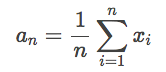
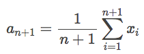
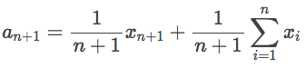
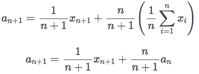
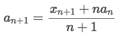

原文连接:https://www.cnblogs.com/fundebug/p/5-ways-calculate-an-average-with-reduce.html
译者按： 有时候一个算法的直观、简洁、高效是需要作出取舍的。
本文采用意译，版权归原作者所有
函数式编程中用于操作数组的方法就像“毒品”一样，它让很多人爱上函数式编程。因为它们真的十分常用而且又超级简单。 .map() 和 .filter()都仅需一个参数，该参数定义操作数组每一个元素的函数即可。reduce()会复杂一些，我之前写过一篇文章介绍为什么人们难以掌握reduce()方法，其中一个原因在于很多入门资料都仅仅用算术作为例子。我写了很多用reduce()来做算术以外的例子。
用reduce()来计算数组的平均值是一个常用的模式。代码看起来非常简单，不过在计算最终结果之前你需要做两个准备工作：
- 数组的长度
- 数组所有元素之和
这两个事情看起来都很简单，那么计算数组的平均值并不是很难了吧。解法如下：
function average(nums) {
return nums.reduce((a, b) => a + b) / nums.length;
}确实不是很难，是吧？但是如果数据结构变得复杂了，就没那么简单了。比如，数组里面的元素是对象，你需要先过滤掉某些对象，然后从对象中取出数字。这样的场景让计算平均值变得复杂了一点。
接下来我们处理一个类似的问题(从this Free Code Camp challenge获得灵感)，我们会提供 5 种不同的解法，每一种方法有各自的优点和缺点。这 5 种方法也展示了 JavaScript 的灵活。我希望可以给你在使用reduce的实战中一些灵感。
问题提出
假设我们有一个数组，记录了维多利亚时代常用的口语。接下来我们要找出那些依然现存于 Google Books 中的词汇，并计算他们的平均流行度。数据的格式是这样的:
const victorianSlang = [
{
term: "doing the bear",
found: true,
popularity: 108
},
{
term: "katterzem",
found: false,
popularity: null
},
{
term: "bone shaker",
found: true,
popularity: 609
},
{
term: "smothering a parrot",
found: false,
popularity: null
},
{
term: "damfino",
found: true,
popularity: 232
},
{
term: "rain napper",
found: false,
popularity: null
},
{
term: "donkey’s breakfast",
found: true,
popularity: 787
},
{
term: "rational costume",
found: true,
popularity: 513
},
{
term: "mind the grease",
found: true,
popularity: 154
}
];接下来我们用 5 中不同的方法计算平均流行度值。
1. for 循环
初次尝试，我们不使用reduce()。如果你对数组的常用函数不熟悉，用 for 循环可以让你更好地理解我们要做什么。
let popularitySum = 0;
let itemsFound = 0;
const len = victorianSlang.length;
let item = null;
for (let i = 0; i < len; i++) {
item = victorianSlang[i];
if (item.found) {
popularitySum = item.popularity + popularitySum;
itemsFound = itemsFound + 1;
}
}
const averagePopularity = popularitySum / itemsFound;
console.log("Average popularity:", averagePopularity);如果你熟悉 JavaScript，上面的代码理解起来应该很容易：
- 初始化
polularitySum和itemsFound变量。popularitySum记录总的流行度值，itemsFound记录我们已经找到的所有的条目； - 初始化
len和item来帮助我们遍历数组； - for 循环每一次增加
i的值，直到循环n次； - 在循环中，我们每次取出当前索引位置的条目
vitorianSlang[i]； - 检查该条目是否在 Google Books 中
- 如果在，获取
popularity并累加到popularitySum； - 并递增
itemsFound； - 最后，用
popularitySum除以itemsFound来计算平均值。
代码虽然不是那么简洁，但是顺利完成了任务。使用数组迭代方法可以更加简洁，接下来开始吧…..
2. 简单模式: filter, map 和 sum
我们首先将这个问题拆分成几个子问题：
- 使用
fitler()找到那些在 Google Books 中的条目; - 使用
map()获取流行度； - 使用
reuduce()来计算总的流行度； - 计算平均值。
下面是实现代码：
// 辅助函数
// ----------------------------------------------------------------------------
function isFound(item) {
return item.found;
}
function getPopularity(item) {
return item.popularity;
}
function addScores(runningTotal, popularity) {
return runningTotal + popularity;
}
// 计算
// ----------------------------------------------------------------------------
// 找出所有isFound为true的条目
const foundSlangTerms = victorianSlang.filter(isFound);
// 从条目中获取流行度值，返回为数组
const popularityScores = foundSlangTerms.map(getPopularity);
// 求和
const scoresTotal = popularityScores.reduce(addScores, 0);
// 计算平均值
const averagePopularity = scoresTotal / popularityScores.length;
console.log("Average popularity:", averagePopularity);注意看addScores函数以及调用reduce()函数的那一行。addScores()接收两个参数，第一个runningTotal，我们把它叫做累加数，它一直记录着累加的总数。每访问数组中的一个条目，我们都会用addScores函数来更新它的值。第二个参数popularity是当前某个元素的值。注意，第一次调用的时候，我们还没有runningTotal的值，所以在调用reduce()的时候，我们给runningTotal初始化。也就是reduce()的第二个参数。
这个版本的代码简洁很多了，也更加的直观。我们不再告诉 JavaScript 引擎如何循环，如何对当前索引的值做操作。我们定义了很多小的辅助函数，并且把它们组合起来完成任务。filter()，map()和reduce()帮我们做了很多工作。上面的实现更加直观地告诉我们这段代码要做什么，而不是底层如何去实现。
3. 简单模式 II: 记录多个累加值
在之前的版本中，我们创建了很多中间变量：foundSlangTerms，popularityScores。接下来，我们给自己设一个挑战，使用链式操作，将所有的函数调用组合起来，不再使用中间变量。注意：popularityScores.length变量需要用其它的方式来获取。我们可以在addScores的累加参数中记录它。
// 辅助函数
// ---------------------------------------------------------------------------------
function isFound(item) {
return item.found;
}
function getPopularity(item) {
return item.popularity;
}
// 我们使用一个对象来记录总的流行度和条目的总数
function addScores({ totalPopularity, itemCount }, popularity) {
return {
totalPopularity: totalPopularity + popularity,
itemCount: itemCount + 1
};
}
// 计算
// ---------------------------------------------------------------------------------
const initialInfo = { totalPopularity: 0, itemCount: 0 };
const popularityInfo = victorianSlang
.filter(isFound)
.map(getPopularity)
.reduce(addScores, initialInfo);
const { totalPopularity, itemCount } = popularityInfo;
const averagePopularity = totalPopularity / itemCount;
console.log("Average popularity:", averagePopularity);我们在reduce函数中使用对象来记录了totalPopularity和itemCount。在addScores中，每次都更新itemCount的计数。
通过filter，map和reduce计算的最终的结果存储在popularityInfo中。你甚至可以继续简化上述代码，移除不必要的中间变量，让最终的计算代码只有一行。
4. point-free 式函数组合
注意: 如果你不熟悉函数式语言或则觉得难以理解，请跳过这部分！
如果你熟悉curry()和compose()，接下来的内容就不难理解。如果你想知道更多，可以看看这篇文章: ‘A Gentle Introduction to Functional JavaScript’. 特别是第三部分 。
我们可以使用compose函数来构建一个完全不带任何变量的代码，这就叫做point-free的方式。不过，我们需要一些帮助函数。
// 辅助函数
// ----------------------------------------------------------------------------
const filter = p => a => a.filter(p);
const map = f => a => a.map(f);
const prop = k => x => x[k];
const reduce = r => i => a => a.reduce(r, i);
const compose = (...fns) => arg => fns.reduceRight((arg, fn) => fn(arg), arg);
// The blackbird combinator.
// See: https://jrsinclair.com/articles/2019/compose-js-functions-multiple-parameters/
const B1 = f => g => h => x => f(g(x))(h(x));
// 计算
// ----------------------------------------------------------------------------
// 求和函数
const sum = reduce((a, i) => a + i)(0);
// 计算数组长度的函数
const length = a => a.length;
// 除法函数
const div = a => b => a / b;
// 我们使用compose()来将函数组合起来
// compose()的参数你可以倒着读，来理解程序的含义
const calcPopularity = compose(
B1(div)(sum)(length),
map(prop("popularity")),
filter(prop("found"))
);
const averagePopularity = calcPopularity(victorianSlang);
console.log("Average popularity:", averagePopularity);我们在compose中做了所有的计算。从后往前看，首先filter(prop('found'))筛选出所有在 Google Books 中的条目，然后通过map(prop('popularity'))获取所有的流行度数值，最后使用 magical blackbird (B1) combinator 来对同一个输入进行sum和length的计算，并求得平均值。
// All the lines below are equivalent:
const avg1 = B1(div)(sum)(length);
const avg2 = arr => div(sum(arr))(length(arr));
const avg3 = arr => sum(arr) / length(arr);
const avg4 = arr => arr.reduce((a, x) => a + x, 0) / arr.length;不要担心看不明白，上面主要是为大家演示有 4 种方式来实现average功能。这就是 JavaScript 的优美之处。
相对来说，本文的内容是有点极客的。虽然笔者之前深度使用函数式语言 Haskell 做过不少研究项目，对函数式颇有理解，但是 point-free 风格的代码，我们是不建议在实际工程中使用的，维护成本会很高。我们Fundebug所有的代码都要求直观易懂，不推崇用一些奇淫技巧来实现。除非某些万不得已的地方，但是一定要把注释写得非常清楚，来降低后期的维护成本。
5. 终极优化: 一次计算出结果
之前所有的解法都可以很好地工作。那些使用reduce()的解法都有一个共同点，它们将大的问题拆解问小的子问题，然后通过不同的方式将它们组合起来。但是也要注意它们对数组遍历了三次，感觉很没有效率。如果一次就可以计算出来，才是最佳的方案。确实可以，不过需要一点数学运算。
为了计算 n 个元素的平均值，我们使用下面的公式：

那么，计算 n+1 个元素的平均值，使用同样的公式（唯一不同的是 n 变成 n+1）：

它等同于:

同样等同于:

做点变换:

结论是，我们可以一直记录当前状态下的所有满足条件的元素的平均值。只要我们知道之前所有元素的平均值和元素的个数。
// 求平均值
function averageScores({ avg, n }, slangTermInfo) {
if (!slangTermInfo.found) {
return { avg, n };
}
return {
avg: (slangTermInfo.popularity + n * avg) / (n + 1),
n: n + 1
};
}
const initialVals = { avg: 0, n: 0 };
const averagePopularity = victorianSlang.reduce(averageScores, initialVals).avg;
console.log("Average popularity:", averagePopularity);这个方法只需要遍历一次就计算出平均值，缺点是我们做了更多的计算。每一次当元素满足条件，都要做乘法和除法，而不是最后才做一次除法。不过，它使用了更少的内存，因为没有中间的数组变量，我们只是记录了一个仅仅有两个元素的对象。
这样写还有一个缺点，代码一点都不直观，后续维护麻烦。至少一眼看过去不能理解它是做什么的。
所以，到底哪一种方案才是最好的呢？视情形而定。也许你有一个很大的数组要处理，也许你的代码需要在内存很小的硬件上跑。在这些场景下，使用第 5 个方案最佳。如果性能不是问题，那么就算使用最低效的方法也没问题。你需要选择最适合的。
还有一些聪明的朋友会思考：是否可以将问题拆解为子问题，仍然只遍历一次呢？是的，确实有。需要使用 transducer。
关于Fundebug
Fundebug专注于JavaScript、微信小程序、微信小游戏、支付宝小程序、React Native、Node.js和Java线上应用实时BUG监控。 自从2016年双十一正式上线，Fundebug累计处理了10亿+错误事件，付费客户有Google、360、金山软件、百姓网等众多品牌企业。欢迎大家免费试用！

版权声明
转载时请注明作者Fundebug以及本文地址：
https://blog.fundebug.com/2019/06/05/5-ways-calculate-an-average-with-reduce/